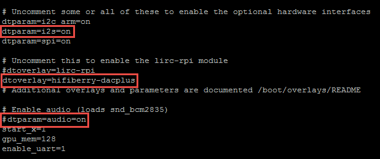

Play High-Quality Audio from Raspberry Pi Using I2S-Based DAC
Inter-IC Sound Bus (I2S) is a communication protocol for transferring digital audio signal. Using an I2S-based digital-to-analog convertor (DAC), you can play high-quality audio from Raspberry Pi™.
Connect DAC HAT and Install Raspian Image on Raspberry Pi
Mount a DAC HAT on your RaspberryPi.
Connect a pair of speakers or headphones to the anolog audio output of the DAC HAT.
Configure your Raspberry Pi hardware as described in Hardware Setup.
Note
Ensure that you install the Raspian image provided by MathWorks®.
Enable I2S Drivers on RaspberryPi
In the MATLAB® Command Window, type the
listAudioDevicescommand. If this command lists your audio device, skip the steps in this section and directly perform the steps in Play Audio in Simulink.Open an SSH command-line session as described in Open a Command-Line Session with Raspberry Pi Hardware.
In the terminal, type
sudo nano /boot/config.txtto edit theconfig.txtfile.To enable the I2S interface in the Raspberry Pi device tree, uncomment the line
dtparam=i2s=onin the hardware interface section of the file.To configure the HiFiBerry DAC, add
dtoverlay=hifiberry-dacplusin the lirc-rpi module section of the file.To disable the onboard ALSA audio devices for Raspberry Pi, comment out the line
dtparam=audio=onin the enable audio section.

Disconnect Raspberry Pi from your computer and connect it again.
Warning
Ensure that the DAC HAT is still mounted on Raspberry Pi.
Play Audio in Simulink
Configure your Simulink® model to run on Raspberry Pi as described in Model Configuration Simulink Support Package for Raspberry Pi Hardware.
Add an ALSA Audio Playback block to the model.
Open the ALSA Audio Playback block in your model. Specify the device number of the DAC HAT in the Device name parameter.
If you do not know the device number of DAC, use the
listAudioDevicesfunction as described in List Available ALSA Audio Output Devices. The resulting structured array displays the device number of your DAC.On the Simulink model toolbar, click the Deploy To Hardware button,
 . This action builds, downloads, and runs the model on
the Raspberry Pi hardware. The audio starts playing.
. This action builds, downloads, and runs the model on
the Raspberry Pi hardware. The audio starts playing.